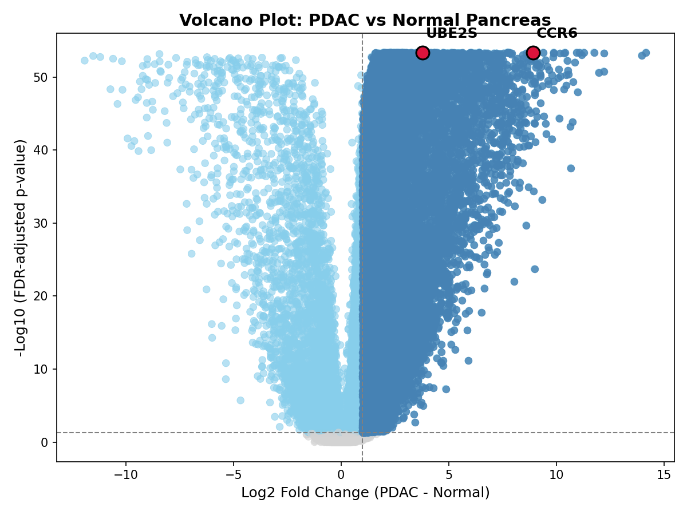
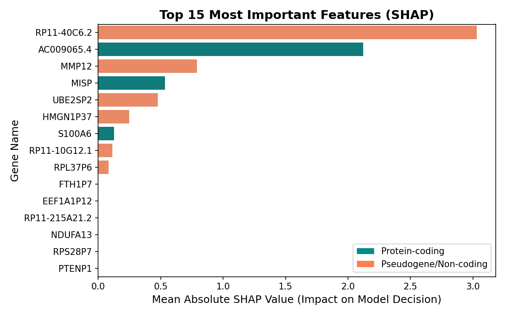
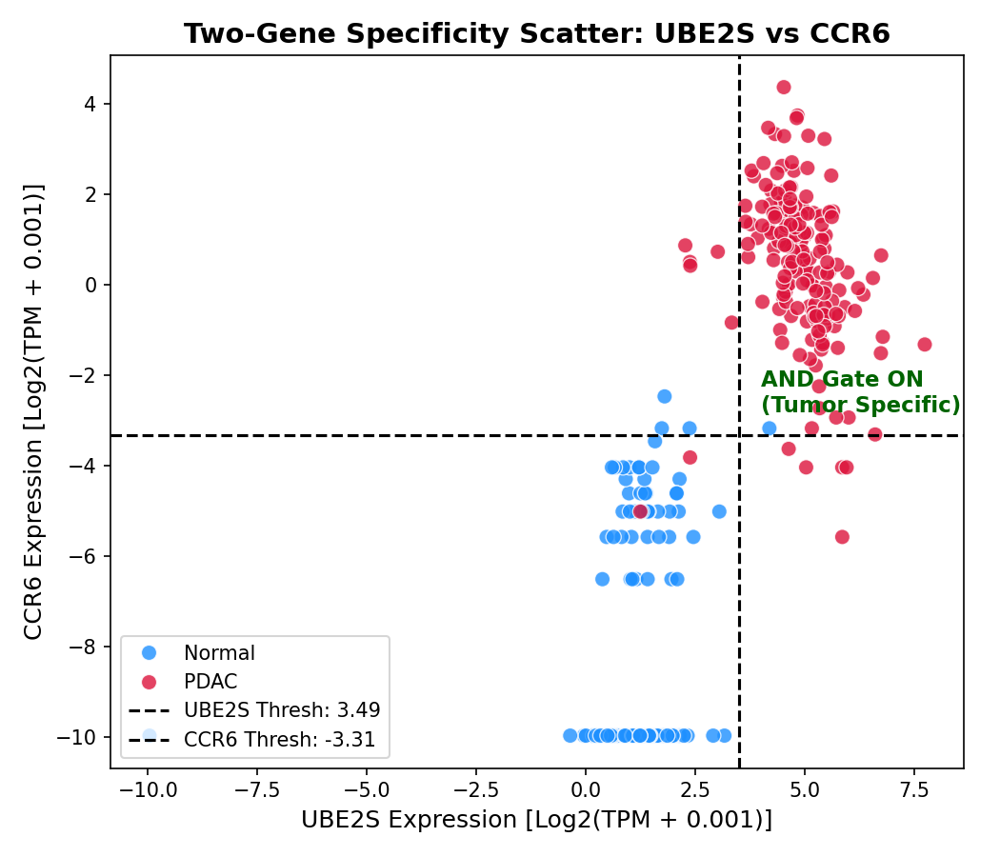
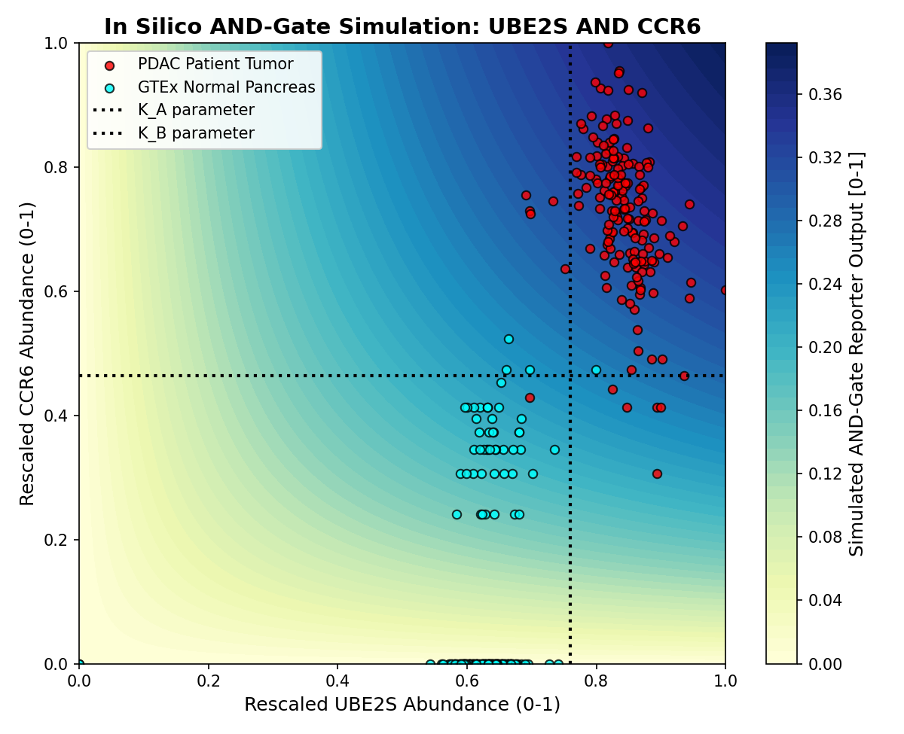
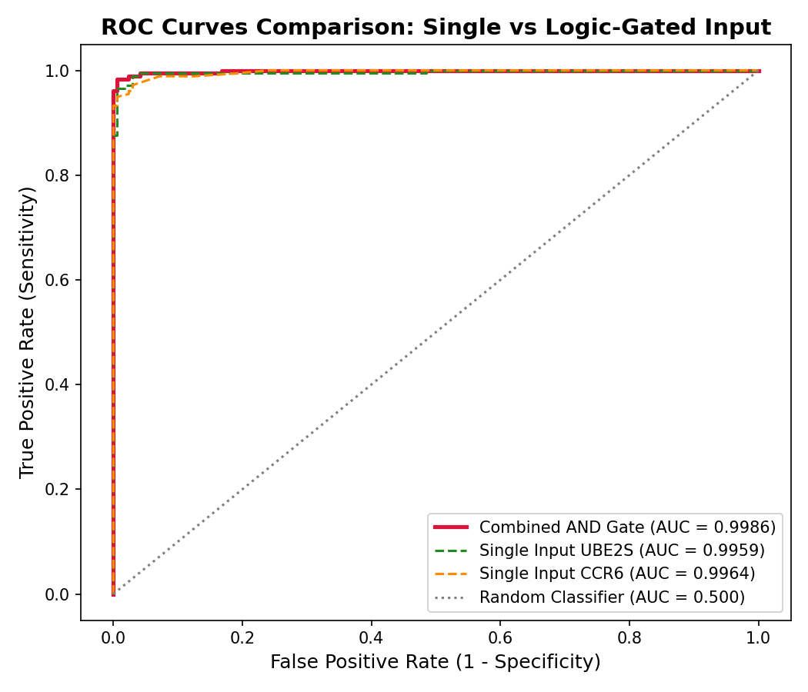

Introduction notes here...
PDAC is notoriously resistant to conventional therapies, largely due to its complex and protective microenvironment.
By requiring two independent markers to be present simultaneously, we restrict biosensor activation only to the core tumor area.
| Input A (UBE2S) | Input B (CCR6) | Output State |
|---|---|---|
| Low / Absent | Low / Absent | OFF (No Activation) |
| High (Proliferating Only) | Low | OFF (No Activation) |
| Low | High (Inflammatory Only) | OFF (No Activation) |
| High (Malignant) | High (Stromal Recruitment) | ON (Active Output) |
* Specificity is achieved through co-occurrence gating.
An objective, structured workflow to translate massive public transcriptomic data into biological gate designs.
We combined primary tissue RNA sequencing data for model discovery, and independent chip arrays for validation.
| Dataset / Cohort | PDAC (Tumor) | Healthy Pancreas | Platform |
|---|---|---|---|
| TCGA-PAAD Discovery |
178 samples | 0 samples | RNA-Seq |
| GTEx Pancreas Discovery |
0 samples | 167 samples | RNA-Seq |
| GSE62452 Validation |
69 samples | 61 samples (adjacent normal) |
Affymetrix |

Differential expression establishes statistical significance, but statistical rankings do not directly yield safe biosensor candidates.

Machine learning was used as a biomarker discovery tool to isolate feature dependencies, rather than as a clinical diagnostics classifier.
The chosen logic pair represents two distinct, complementary biological signatures of the pancreatic tumor microenvironment.

The combined dual-input classifier successfully isolates tumor states in the discovery cohort with high statistical margin.

We simulated logical behavior using a phenomenological Hill-equation model to verify threshold sensitivity.
Output = P_{basal} + V_{max} \times H(\text{UBE2S}) \times H(\text{CCR6})

Testing the model on microarray dataset GSE62452 revealed strong specificity conservation but poor sensitivity transferability.
| Performance Metric | Discovery (RNA-Seq) | Validation (Microarray) |
|---|---|---|
| Area Under Curve (AUC) | 0.9986 | 0.6480 |
| Sensitivity | 97.8% | 4.3% |
| Specificity | 99.4% | 98.4% |
This study represents an in silico design hypothesis. Translating it to clinical utility requires addressing several limitations.
"This pipeline establishes a structured framework to convert raw public transcriptomic data into testable, high-specificity synthetic biology design hypotheses."